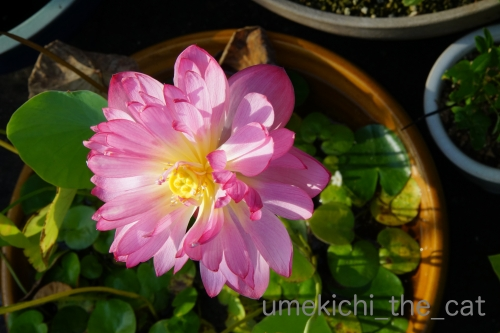
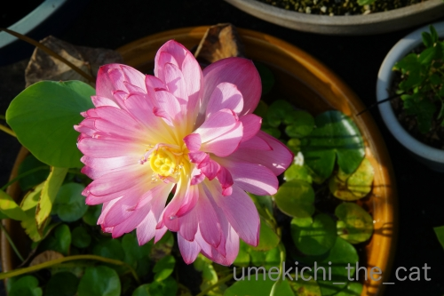

シッターさんに新技を披露する [梅吉]
札幌から帰ってきました。
半袖だと朝晩は羽織るものがないと肌寒く感じましたが
日中は思ったよりも暑くて湿度も高かったです。札幌はカラッと爽やかな土地のはずなのに。
北の大地の天候も変わってきているのかな。
皆様への所には今日から遊びに伺いますね＾＾
昨日少しだけ巡回してたのですが途中で力尽きて。。。
中途半端なご訪問になっちゃってごめんなさいm(_ _)m
さてさてお留守番の梅吉さんは・・・
1日目の夜にシッターさんから送られてきた写真の中から一枚。
冷蔵庫前で「ごはんはやくー！」の様子です。
シッターさんへの猫パンチと足ガブガブ＆タックルは健在だった模様（⌒-⌒;
最近丸くなったなぁ・・・と思ってたのでシッターさんへの接し方に何か変化があるかも
とちょっぴり思っていたのにw
それどころか話しかけると「カッ！！」っと威嚇の様な声を出すらしい (≧▽≦)
やだ、なにその新技！私も聞いてみたーーーーーーーーい0(≧▽≦)0
翌日の朝に送られてきた写真の中から一枚。ベランダから窓越しに撮ったものでしょう。
（シッターさんにはベランダの植物の水やりもお願いしてます）
この写真見たときにちょっと泣きそうになりました・・・
「おとーさんとおかーさん どこにいったん？」と不安そうな表情に見えて。
我が家の場合夫婦ともに実家が札幌でそれぞれの両親計３名は健在です。
親に何かあれば梅吉の留守番は必須。
留守番にはある程度慣れてもらわねばならないのですよ・・・
梅吉、がんばるんだ！
で、この写真を見た約8時間後には帰宅ー！

わーわー鳴きながら玄関で出迎えてくれました＾＾
その後ハイテンションで家の中を走り回り（喜びの表現と思われますw）
おかーさんに撫で回されてブルブル喉を鳴らしてご飯を食べてひと心地ついて
![[猫]](https://blog.ss-blog.jp/_images_e/101.gif) せや！わしを ひとりぼっちにしたやろ！！
せや！わしを ひとりぼっちにしたやろ！！
と思い出しお怒りモードになった？梅吉の表情ですw
直後、新聞の上＆傘の下というウハウハな場所ですぐにゴキゲン♪

カゴにぎゅうぎゅうに詰まって爆睡して

おかーさんにちゅうちゅう添い寝してもらって日常を取り戻した梅吉さんでした＾＾
 ↑ガブッと一押し↑
↑ガブッと一押し↑
半袖だと朝晩は羽織るものがないと肌寒く感じましたが
日中は思ったよりも暑くて湿度も高かったです。札幌はカラッと爽やかな土地のはずなのに。
北の大地の天候も変わってきているのかな。
皆様への所には今日から遊びに伺いますね＾＾
昨日少しだけ巡回してたのですが途中で力尽きて。。。
中途半端なご訪問になっちゃってごめんなさいm(_ _)m
さてさてお留守番の梅吉さんは・・・
1日目の夜にシッターさんから送られてきた写真の中から一枚。
冷蔵庫前で「ごはんはやくー！」の様子です。
シッターさんへの猫パンチと足ガブガブ＆タックルは健在だった模様（⌒-⌒;
最近丸くなったなぁ・・・と思ってたのでシッターさんへの接し方に何か変化があるかも
とちょっぴり思っていたのにw
それどころか話しかけると「カッ！！」っと威嚇の様な声を出すらしい (≧▽≦)
やだ、なにその新技！私も聞いてみたーーーーーーーーい0(≧▽≦)0
翌日の朝に送られてきた写真の中から一枚。ベランダから窓越しに撮ったものでしょう。
（シッターさんにはベランダの植物の水やりもお願いしてます）
この写真見たときにちょっと泣きそうになりました・・・
「おとーさんとおかーさん どこにいったん？」と不安そうな表情に見えて。
我が家の場合夫婦ともに実家が札幌でそれぞれの両親計３名は健在です。
親に何かあれば梅吉の留守番は必須。
留守番にはある程度慣れてもらわねばならないのですよ・・・
梅吉、がんばるんだ！
で、この写真を見た約8時間後には帰宅ー！
わーわー鳴きながら玄関で出迎えてくれました＾＾
その後ハイテンションで家の中を走り回り（喜びの表現と思われますw）
おかーさんに撫で回されてブルブル喉を鳴らしてご飯を食べてひと心地ついて
と思い出しお怒りモードになった？梅吉の表情ですw
直後、新聞の上＆傘の下というウハウハな場所ですぐにゴキゲン♪
カゴにぎゅうぎゅうに詰まって爆睡して
おかーさんにちゅうちゅう添い寝してもらって日常を取り戻した梅吉さんでした＾＾
一足先に秋の空気を味わってきます [梅吉]
皆様、前記事へのたくさんのお祝いメッージ、本当にありがとうございましたm(_ _)m
おばちゃんになってもたん生日は嬉しいものですね＾＾
〜〜〜〜〜〜〜〜〜〜〜〜〜〜〜〜〜〜〜〜〜〜〜〜〜〜〜〜〜〜〜〜〜〜〜〜〜〜〜〜
梅吉さんにお願いがありますよ。
ものはそうだんやで
前回のお留守番は無しになったけど別件でお留守番をお願いしたいのです。
え〜〜〜〜っ わし いがいにあまえんぼうなんやで・・・
おっとの出張に便乗して札幌に帰省します。
お盆を過ぎると北海道は空が高くなって秋の気配なんですよ。
秋風が吹いて朝晩に半袖では寒さを感じるくらい、なはず。
皆様より一足先に秋の空気を感じてきまーす！
梅吉のお世話はシッターさんにお願いしてます。
我が家がお願いしているシッターさんはCOCOWLK（ココアルコ）です。
ココアルコさんとは３年来のお付き合い。
今生き物を飼っている方、これから飼おうかと思っている方は
価格やお世話内容を参考になさってくださいませ。
料金は地域差もあると思いますが意外にリーズナブルなんですよ＾＾
さてさてお留守番の梅吉さんはしっかり自宅警備をしてくれるはず、と期待をしております。
（27秒 前半音が出ます）
とっても腰が引けてますがこの心意気あれば大丈夫ですよね(^_－)☆
２〜３日ブログ活をお休みしますね。
帰ってきたらまた一緒に遊んでくださいませーヾ(*ΦωΦ)ﾉ
↑ガブッと一押し↑
おばちゃんになってもたん生日は嬉しいものですね＾＾
〜〜〜〜〜〜〜〜〜〜〜〜〜〜〜〜〜〜〜〜〜〜〜〜〜〜〜〜〜〜〜〜〜〜〜〜〜〜〜〜
梅吉さんにお願いがありますよ。
前回のお留守番は無しになったけど別件でお留守番をお願いしたいのです。
おっとの出張に便乗して札幌に帰省します。
お盆を過ぎると北海道は空が高くなって秋の気配なんですよ。
秋風が吹いて朝晩に半袖では寒さを感じるくらい、なはず。
皆様より一足先に秋の空気を感じてきまーす！
梅吉のお世話はシッターさんにお願いしてます。
我が家がお願いしているシッターさんはCOCOWLK（ココアルコ）です。
ココアルコさんとは３年来のお付き合い。
今生き物を飼っている方、これから飼おうかと思っている方は
価格やお世話内容を参考になさってくださいませ。
料金は地域差もあると思いますが意外にリーズナブルなんですよ＾＾
さてさてお留守番の梅吉さんはしっかり自宅警備をしてくれるはず、と期待をしております。
（27秒 前半音が出ます）
とっても腰が引けてますがこの心意気あれば大丈夫ですよね(^_－)☆
２〜３日ブログ活をお休みしますね。
帰ってきたらまた一緒に遊んでくださいませーヾ(*ΦωΦ)ﾉ
梅吉も喜ぶプレゼント [梅吉]
前記事で梅吉が入っていた箱。
縦置きにすると飛び込んでいきました。0(≧▽≦)0
おちり全開ですw
箱に入った後の「はて？」みたいな顔はなんなのでしょ(⌒-⌒;
この箱、「扇風機が入っていたと推測！」とコメントをいただきましたが（笑）
入っていたのは

これです！
私事ですが誕生日でした＾＾
近所の老舗和菓子屋さんのロールケーキも。
奇数月は季節のロールケーキ、偶数月はこの定番のつぶあんと求肥入りを扱ってます。
これがね、とーっても美味しいのです！
おっと、ありがとう！！
↑ガブッと一押し↑
縦置きにすると飛び込んでいきました。0(≧▽≦)0
おちり全開ですw
箱に入った後の「はて？」みたいな顔はなんなのでしょ(⌒-⌒;
この箱、「扇風機が入っていたと推測！」とコメントをいただきましたが（笑）
入っていたのは
これです！
私事ですが誕生日でした＾＾
近所の老舗和菓子屋さんのロールケーキも。
奇数月は季節のロールケーキ、偶数月はこの定番のつぶあんと求肥入りを扱ってます。
これがね、とーっても美味しいのです！
おっと、ありがとう！！
移ろう季節を感じる梅吉！？ [梅吉]
暑い盛りはあまり動かなかった梅吉さん。
撮れる写真はこんな寝姿や
こんな寝顔ばっかりだったのですがここ数日がぜん活動的になってきました。
梅吉さんはがぶがぶ顔がお似合いですよ＾＾
おとーさんの腕を抱え込んでます(⌒-⌒;
膀胱炎がらみで具合が悪いのか？夏バテか？？
４ちゃいにして早くも老成してしまった！？と少々心配していたのですが
梅吉はやっぱり梅吉の様で一安心(*>艸<)
まだまだ暑い日が続いていますが
立秋も過ぎ猫なりに活動の秋の気配を敏感に感じ取っているのでしょうか。

久しぶりに箱インしてドヤ顔ですw
箱の隙間から見えているお手手が萌えポイントー！！！0(≧▽≦)0
↑ガブッと一押し↑
撮れる写真はこんな寝姿や
こんな寝顔ばっかりだったのですがここ数日がぜん活動的になってきました。
梅吉さんはがぶがぶ顔がお似合いですよ＾＾
おとーさんの腕を抱え込んでます(⌒-⌒;
膀胱炎がらみで具合が悪いのか？夏バテか？？
４ちゃいにして早くも老成してしまった！？と少々心配していたのですが
梅吉はやっぱり梅吉の様で一安心(*>艸<)
まだまだ暑い日が続いていますが
立秋も過ぎ猫なりに活動の秋の気配を敏感に感じ取っているのでしょうか。
久しぶりに箱インしてドヤ顔ですw
箱の隙間から見えているお手手が萌えポイントー！！！0(≧▽≦)0
２年ぶりのシャンプー [梅吉]
お盆休みに2年ぶりに梅吉をシャンプーしました。
梅吉の名誉のために書いておきますがブラシはほぼ毎晩。
真夏の時期を除いては毎日私と一緒にお風呂に入って
蒸しタオルで全身を拭いているので清潔ではあるのですよ＾＾
洗い場に連れてこられても平常心。
このあわあわは なんやー
シャワーをかけると慌て始めましたけど。
シャンプーは好きじゃない様ですが鳴き叫んだりせず静かにしてるんですよ。
（7秒です＾＾）
二人で手分けして洗ってすすいでその間４〜５分？
こういう事は手早く済ますに限ります。

濡れ鼠の梅吉さんw

不思議な生き物のシルエット(*>艸<)

この貧弱なおしっぽのシルエットが大好です0(≧▽≦)0
シャンプー後はとにかく挙動不審で落ち着かなげにウロウロ＆濡れた体をペロペロ。
時々私の顔を見てわーわー。なにか文句言ってます？
ドライヤーは一箇所にじっとしていないのでNGです。
梅吉のシャンプーは（去年はしなかったけど）一年に一度。
シャンプーが終わると夏の大仕事が終わったなって思うのでした。
↑ガブッと一押し↑
梅吉の名誉のために書いておきますがブラシはほぼ毎晩。
真夏の時期を除いては毎日私と一緒にお風呂に入って
蒸しタオルで全身を拭いているので清潔ではあるのですよ＾＾
洗い場に連れてこられても平常心。
シャワーをかけると慌て始めましたけど。
シャンプーは好きじゃない様ですが鳴き叫んだりせず静かにしてるんですよ。
（7秒です＾＾）
二人で手分けして洗ってすすいでその間４〜５分？
こういう事は手早く済ますに限ります。
濡れ鼠の梅吉さんw
不思議な生き物のシルエット(*>艸<)
この貧弱なおしっぽのシルエットが大好です0(≧▽≦)0
シャンプー後はとにかく挙動不審で落ち着かなげにウロウロ＆濡れた体をペロペロ。
時々私の顔を見てわーわー。なにか文句言ってます？
ドライヤーは一箇所にじっとしていないのでNGです。
梅吉のシャンプーは（去年はしなかったけど）一年に一度。
シャンプーが終わると夏の大仕事が終わったなって思うのでした。
かべ走りポーズとおほほ寝 [梅吉]
昨日今日と時間が取れなくて皆様のブログへのご訪問が出来ておりません＆出来ない予定です。
大変失礼しておりますがお許しくださいませm(_ _)m
ーーーーーーーーーーーーーーーーーーーーーーーーーーーーーーーーーーーーーー
日中は暑過ぎるので出歩く人もまばらな我が家付近です。
子供達もおじいちゃんおばあちゃんの家に行っているのかな？
しーんとひっそり静かな街も良いものですね＾＾
我が家はお盆休みは家と近場で過ごしますが今月末に帰省予定。
この時期の帰省で心配なのは台風。
「札幌に行けない」のはまだ良いのですが「大阪に帰って来られない」はとても困ります＞＜
まだ先のことですが月末は天気にやきもきしそうです。
梅吉さんはそんな心配もなくマイペースでのんびりです。
（留守番しなきゃならないけどw）
廊下に転がっているときは広がっているか「かべ走りポーズ」のどちらか。
この日はちらキバでかべ走りw
だんだん眠くなって行きますよー＾＾
こちらはレンジフードの上で「おほほ寝」＠熟睡中。
ぴったりサイズではあるのですがあずましくないと思うんですよね。
（あずましくない＝おちつかない、くつろげないなどを意味する北海道弁です＾＾）
私も狭いところは落ち着いて好きなんですが落ちる可能性のあることろは嫌だなぁ。
ーーーーーーーーーーーーーーーーーーーーーーーーーーーーーーーーーーーーーーーーー
夏の初めに買った蓮の苗。
蕾がついた状態でうちにやってきたのですがうまく咲けずに終わっていました。
今年はだめかな？来年に期待！と思っていたらこの猛暑の中咲いたヾ(*ΦωΦ)ﾉ

蓮の花ってうっとりするくらいキレイですよね。
家の中から眺められる一服の清涼剤です＾＾
↑ガブッと一押し↑
大変失礼しておりますがお許しくださいませm(_ _)m
ーーーーーーーーーーーーーーーーーーーーーーーーーーーーーーーーーーーーーー
日中は暑過ぎるので出歩く人もまばらな我が家付近です。
子供達もおじいちゃんおばあちゃんの家に行っているのかな？
しーんとひっそり静かな街も良いものですね＾＾
我が家はお盆休みは家と近場で過ごしますが今月末に帰省予定。
この時期の帰省で心配なのは台風。
「札幌に行けない」のはまだ良いのですが「大阪に帰って来られない」はとても困ります＞＜
まだ先のことですが月末は天気にやきもきしそうです。
梅吉さんはそんな心配もなくマイペースでのんびりです。
（留守番しなきゃならないけどw）
廊下に転がっているときは広がっているか「かべ走りポーズ」のどちらか。
この日はちらキバでかべ走りw
だんだん眠くなって行きますよー＾＾
こちらはレンジフードの上で「おほほ寝」＠熟睡中。
ぴったりサイズではあるのですがあずましくないと思うんですよね。
（あずましくない＝おちつかない、くつろげないなどを意味する北海道弁です＾＾）
私も狭いところは落ち着いて好きなんですが落ちる可能性のあることろは嫌だなぁ。
ーーーーーーーーーーーーーーーーーーーーーーーーーーーーーーーーーーーーーーーーー
夏の初めに買った蓮の苗。
蕾がついた状態でうちにやってきたのですがうまく咲けずに終わっていました。
今年はだめかな？来年に期待！と思っていたらこの猛暑の中咲いたヾ(*ΦωΦ)ﾉ

蓮の花ってうっとりするくらいキレイですよね。
家の中から眺められる一服の清涼剤です＾＾
波潜りなアイツ [梅吉]
この波の向こうからアイツがやってくる。

チラ見え！

来ました！華麗にシーツの波下を潜ってます。
お目目をしぱしぱしながら果敢に攻めてきますよ。
波が大きければ大きいほど楽しいようです。
おかーさんにはこれのどこが楽しいのさっぱりわかりませんけど＞＜
新聞の下も大好き。
潜り込んでくるので新聞紙をかぶせるとその下でひたすらじーっとしています。
時々新聞をガサガサっとすると興奮するらしくお目目が爛々に(*>艸<)
暑いのに窓辺で寝ている、エアコンの効いてない部屋で寝ている・・・
エアコン直下は少数派・・・？
皆様のブログで見聞きした夏の猫様のご様子ですが梅吉は今、押入れが一番のお気に入り。
冬用のブランケットをまとめてある上や
（押入れはエアコンから離れているので中はとても暑いです）

おなじく押入れの中の体重計のトレーにすっぽり。
この体重計は梅吉の体重を計るために買った赤ちゃん用のものですw
ウエスにしようと置いておいた私の古いＴシャツが枕になってる(⌒-⌒;
うっかり置いておけませんねぇ・・・・
和室のチェストの上でも寝ています。
物があっても全然気にせず寝ちゃうので色々なものは脇に押しやられ・・・
猫様スペースがどんどんと広くなっていく。
でも物を片付けると寝なくなるんだろうなぁとこのままにしています(*>艸<)
ーーーーーーーーーーーーーーーーーーーーーーーーーーーーーーーーーーーーーーーー
梅吉の膀胱炎の薬を止めてからほぼ一週間。
おしっこは1日3度、量は水分を多めに取らせているので以前より多め。
頻尿は一度もなく順調です。
すっかり完治したようでホッとしております。
ご報告までm(_ _)m
暑中お見舞いは白目にて [梅吉]

梅吉より季節のご挨拶ですm(_ _)m
エアコンの効いた快適なお部屋で日々白目がちにお昼寝する毎日＾＾
我が家付近は連日体感温度37℃ぐらいかな。
外は息苦しい程の暑さ、商業施設や飲食店、電車の中は冷凍庫のよう・・・
体がおかしくなりそうです(⌒-⌒;
皆様もご自愛くださいませ。
☆ちょっとご説明☆
梅吉は夏になると寝入り端になぜか白目がち(*>艸<)
我が家では夏の風物詩、「日本の夏、白目の夏」なのです。
画像加工してませんよ。天然白目＾＾
ほあんかん [梅吉]

ほあんかんさん！事件・・・・・！！
・・・・が起きるかもしれませんよ。くつろぎすぎじゃないですか？

そうですか？休息しっぱなしのような気もしますけど。
先日はトンネルの窓からこんな足が見えたのでのぞいてみたら

こんなんなって

こんな感じでしたけど。


はいはい＾＾引き続き地域の治安維持、お願いしますね！

近所の大きい神社の夏越の祓の茅の輪。
門にくくりつけてあるので妙な形になってますが・・・www
この神社、宵宮から始まりただいまお祭り中です。
朝早い時間にささっとお参りしてきましたが
昼間・夜は人が凄すぎてとてもとても近寄れたものではありません。
本当にすごい人なんです；；
このお祭りが終わると神様もお疲れ様、の暑いだけの夏がやってきます。。。

そうそう！神馬の白雪さんも来阪されてます。
それがですね・・・偶然沐浴中に通りがかって気づいたのですが
白雪さん、男子でした＞＜
私はあの麗しいお姿にずーっと女子だと思っていて・・・
以前の記事で女子だと思われた方もいらしたのではないでしょうか。
（神馬は男子じゃない？と察した方もいらっしゃったかな。）
記憶の修正をお願い致します。
白雪さんにも皆様にも大変失礼致しましたm(_ _)m

カフェオレ色の梅吉

梅吉 2023年8月10日 永眠


梅吉と出会った譲渡会

犬猫の理由なき殺処分ゼロ
妄想広告
UMEKICHI 光

爆発的に早い！
時々攻撃的！
Thanks to Mr.Boss365
爆発的に早い！
時々攻撃的！
Thanks to Mr.Boss365